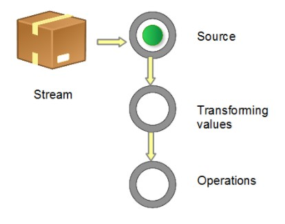

没有工作的生活感觉真的无聊
概述
自从毕业进入上家公司，感受到自己的无知和技术更新迭代速度是真的快。Java8中许多新特性都在ZStack中有所使用。故这里对Java8新特性进行总结一下。
近几年Java的发展的确挺快的，修改了许多令开发人员诟病的特性。正在逐渐吸收着其他语言的优点。我相信Java仍是许多项目中不可或缺的语言。前景仍然看好。
Lambda表达式
官网表述：
Lambda表达式是Java 8中最大和最令人期待的语言改变。它允许我们将函数当成参数传递给某个方法，或者把代码本身当作数据处理：函数式开发者非常熟悉这些概念。很多JVM平台上的语言（Groovy、Scala等）从诞生之日就支持Lambda表达式，但是早期Java开发者没有选择，只能使用匿名内部类代替Lambda表达式。
最简单的Lambda表达式可由逗号分隔的参数列表、->符号和语句块组成，例如：
1 | Arrays.asList( "a", "b", "d" ).forEach( e -> System.out.println( e ) ); |
在上面这个代码中的参数e的类型是由编译器推理得出的，你也可以显式指定该参数的类型，例如：
1 | Arrays.asList( "a", "b", "d" ).forEach( ( String e ) -> System.out.println( e ) ); |
如果Lambda表达式需要更复杂的语句块，则可以使用花括号将该语句块括起来，类似于Java中的函数体，例如：
1 | Arrays.asList( "a", "b", "d" ).forEach( e -> { |
Lambda表达式可以引用类成员和局部变量（会将这些变量隐式得转换成final的），例如下列两个代码块的效果完全相同：
1 | String separator = ","; |
Lambda表达式有返回值，返回值的类型也由编译器推理得出。如果Lambda表达式中的语句块只有一行，则可以不用使用return语句，下列两个代码片段效果相同：
1 | Arrays.asList( "a", "b", "d" ).sort( ( e1, e2 ) -> e1.compareTo( e2 ) ); |
Java8实现Lambda表达式其实就是让行为参数化，就是把一个行为当做方法的参数，以此达到和以前版本进行兼容的目的。
注意：
Java 8的Lambda和匿名类和闭包是有一些不同的地方。
用科学的说法来说，闭包就是一个函数的实例，且它可以无限制地访问那个函数的非本地变量。例如，闭包可以作为参数传递给另一个函数。它也可以访问和修改其作用域之外的变量。
Java 8的Lambda和匿名类可以做类似于闭包的事情：它们可以作为参数传递给方法，并且可以访问其作用域之外的变量。但有一个限制：它们不能修改定义Lambda的方法的局部变量的内容。这些变量必须是隐式最终的。可以认为Lambda是对值封闭，而不是对变量封闭。这种限制存在的原因在于局部变量保存在栈上，并且隐式表示它们仅限于其所在线程。如果允许捕获可改变的局部变量，就会引发造成线程不安全的新的可能性，而这是我们不想看到的。
函数接口
Lambda的设计者们为了让现有的功能与Lambda表达式良好兼容，考虑了很多方法，于是产生了函数接口这个概念。函数接口指的是只有一个函数的接口，这样的接口可以隐式转换为Lambda表达式。java.lang.Runnable和java.util.concurrent.Callable是函数式接口的最佳例子。在实践中，函数式接口非常脆弱：只要某个开发者在该接口中添加一个函数，则该接口就不再是函数式接口进而导致编译失败。为了克服这种代码层面的脆弱性，并显式说明某个接口是函数式接口，Java 8 提供了一个特殊的注解@FunctionalInterface（Java 库中的所有相关接口都已经带有这个注解了），举个简单的函数式接口的定义：
1 |
|
如果你用@FunctionalInterface定义了一个接口，而它却不是函数式接口的话，编译器将返回一个提示原因的错误。例如，错误消息可能是“Multiple non-overriding abstract methods found in interface Foo”，表明存在多个抽象方法。
看下面的例子：1
2
3
4
5
6
7
8
9
10
11
12
13
14
15
16
17//接口
public interface Cumputer {
String start(String name);
String communication(int e);
}
//主函数
public class LambdaDemo {
static void demoInterface(Cumputer cumputer){
}
public static void main(String [] args){
demoInterface(name -> {
name += "a";
return name;
});
}
}
这个时候 name += “a”这句就会报错，Lambda表达式无法推断出name的参数类型。如果指定name的类型。如下：
1 | public static void main(String [] args){ |
编译器会提示：Multiple non-overriding abstract methods found in interface Foo错误。函数接口只能允许有一个方法。所以@FunctionalInterface就可以提示开发者在修改接口的时候，这个接口是否允许多个方法行为。
请注意，@FunctionalInterface不是必需的，但对于为此设计的接口而言，使用它是比较好的做法。它就像是@Override标注表示方法被重写了。并且默认方法和静态方法不会破坏函数式接口的定义，因此如下的代码是合法的。
1 |
|
接口默认方法
默认方法使得接口有点类似traits，不过要实现的目标不一样。默认方法使得开发者可以在 不破坏二进制兼容性的前提下，往现存接口中添加新的方法，即不强制那些实现了该接口的类也同时实现这个新加的方法。
默认方法和抽象方法之间的区别在于抽象方法需要实现，而默认方法不需要。接口提供的默认方法会被接口的实现类继承或者覆写，例子代码如下：
1 | private interface Defaulable { |
由于JVM上的默认方法的实现在字节码层面提供了支持，因此效率非常高。默认方法允许在不打破现有继承体系的基础上改进接口。该特性在官方库中的应用是：给java.util.Collection接口添加新方法，如stream()、parallelStream()、forEach()和removeIf()等等。
方法引用
方法引用使得开发者可以直接引用现存的方法、Java类的构造方法或者实例对象。方法引用和Lambda表达式配合使用，使得java类的构造方法看起来紧凑而简洁，没有很多复杂的模板代码。
方法引用可以使用::。
定义了4个方法的Car这个类作为例子，区分Java中支持的4种不同的方法引用。
1 | public static class Car { |
第一种方法引用是构造器引用，它的语法是Class::new，或者更一般的Class< T >::new。请注意构造器没有参数。
1 | final Car car = Car.create( Car::new ); |
第二种方法引用是静态方法引用，它的语法是Class::static_method。请注意这个方法接受一个Car类型的参数。
1 | cars.forEach( Car::collide ); |
第三种方法引用是特定类的任意对象的方法引用，它的语法是Class::method。请注意，这个方法没有参数。
1 | cars.forEach( Car::repair ); |
最后，第四种方法引用是特定对象的方法引用，它的语法是instance::method。请注意，这个方法接受一个Car类型的参数
1 | final Car police = Car.create( Car::new ); |
流
Stream 作为 Java 8 的一大亮点，它与 java.io 包里的 InputStream 和 OutputStream 是完全不同的概念。它也不同于 StAX 对 XML 解析的 Stream，也不是 Amazon Kinesis 对大数据实时处理的 Stream。Java 8 中的 Stream 是对集合（Collection）对象功能的增强，它专注于对集合对象进行各种非常便利、高效的聚合操作（aggregate operation），或者大批量数据操作 (bulk data operation)。Stream API 借助于同样新出现的 Lambda 表达式，极大的提高编程效率和程序可读性。同时它提供串行和并行两种模式进行汇聚操作，并发模式能够充分利用多核处理器的优势，使用 fork/join 并行方式来拆分任务和加速处理过程。通常编写并行代码很难而且容易出错, 但使用 Stream API 无需编写一行多线程的代码，就可以很方便地写出高性能的并发程序。所以说，Java 8 中首次出现的 java.util.stream 是一个函数式语言+多核时代综合影响的产物。
什么是流
Stream 不是集合元素，它不是数据结构并不保存数据，它是有关算法和计算的，它更像一个高级版本的 Iterator。原始版本的 Iterator，用户只能显式地一个一个遍历元素并对其执行某些操作；高级版本的 Stream，用户只要给出需要对其包含的元素执行什么操作，比如 “过滤掉长度大于 10 的字符串”、“获取每个字符串的首字母”等，Stream 会隐式地在内部进行遍历，做出相应的数据转换。
Stream 就如同一个迭代器（Iterator），单向，不可往复，数据只能遍历一次，遍历过一次后即用尽了，就好比流水从面前流过，一去不复返。
而和迭代器又不同的是，Stream 可以并行化操作，迭代器只能命令式地、串行化操作。顾名思义，当使用串行方式去遍历时，每个 item 读完后再读下一个 item。而使用并行去遍历时，数据会被分成多个段，其中每一个都在不同的线程中处理，然后将结果一起输出。Stream 的并行操作依赖于 Java7 中引入的Fork/Join 框架（JSR166y）来拆分任务和加速处理过程。
流的构成
当我们使用一个流的时候，通常包括三个基本步骤：
获取一个数据源（source）→ 数据转换→执行操作获取想要的结果，每次转换原有 Stream 对象不改变，返回一个新的 Stream 对象（可以有多次转换），这就允许对其操作可以像链条一样排列，变成一个管道，如下图所示。
流管道 (Stream Pipeline) 的构成

流的操作类型分为三种：
- Intermediate（中间）：一个流可以后面跟随零个或多个 intermediate 操作。其目的主要是打开流，做出某种程度的数据映射/过滤，然后返回一个新的流，交给下一个操作使用。这类操作都是惰性化的（lazy），就是说，仅仅调用到这类方法，并没有真正开始流的遍历。
- Terminal（终点）：一个流只能有一个 terminal 操作，当这个操作执行后，流就被使用“光”了，无法再被操作。所以这必定是流的最后一个操作。Terminal 操作的执行，才会真正开始流的遍历，并且会生成一个结果。
- Short-Circuiting（短循环）：1.对于一个 intermediate 操作，如果它接受的是一个无限大（infinite/unbounded）的 Stream，但返回一个有限的新 Stream。
2.对于一个 terminal 操作，如果它接受的是一个无限大的 Stream，但能在有限的时间计算出结果。
3.当操作一个无限大的 Stream，而又希望在有限时间内完成操作，则在管道内拥有一个 short-circuiting 操作是必要非充分条件。
在对于一个 Stream 进行多次转换操作 (Intermediate 操作)，每次都对 Stream 的每个元素进行转换，而且是执行多次，这样时间复杂度就是 N（转换次数）个 for 循环里把所有操作都做掉的总和吗？其实不是这样的，转换操作都是 lazy 的，多个转换操作只会在 Terminal 操作的时候融合起来，一次循环完成。我们可以这样简单的理解，Stream 里有个操作函数的集合，每次转换操作就是把转换函数放入这个集合中，在 Terminal 操作的时候循环 Stream 对应的集合，然后对每个元素执行所有的函数。
示例：
1 | int sum = widgets.stream() |
stream() 获取当前小物件的 source，filter 和 mapToInt 为 intermediate 操作，进行数据筛选和转换，最后一个 sum() 为 terminal 操作，对符合条件的全部小物件作重量求和。
流操作有两个重要的特点：
- 流水线——很多流操作本身会返回一个流，这样多个操作就可以链接起来，形成一个大的流水线。这让我们下一章中的一些优化成为可能，如延迟和短路。流水线的操作可以看作对数据源进行数据库式查询。
- 内部迭代——与使用迭代器显式迭代的集合不同，流的迭代操作是在背后进行的。
流的操作
接下来，当把一个数据结构包装成 Stream 后，就要开始对里面的元素进行各类操作了。常见的操作可以归类如下。
Intermediate：
map (mapToInt, flatMap 等)、 filter、 distinct、 sorted、 peek、 limit、skip、 parallel、 sequential、 unordered
Terminal：
forEach、 forEachOrdered、 toArray、 reduce、 collect、 min、 max、 count、anyMatch、 allMatch、 noneMatch、 findFirst、 findAny、 iterator
Short-circuiting：
anyMatch、 allMatch、 noneMatch、 findFirst、 findAny、 limit
| 操作 | 类型 | 返回值 | 说明 |
|---|---|---|---|
map |
中间 | Stream<R> |
map 生成的是个 1:1 映射，每个输入元素，都按照规则转换成为另外一个元素。 |
flatMap |
中间 | Stream<R> |
一对多， flatMap 把 input Stream 中的层级结构扁平化，就是将最底层元素抽出来放到一起，看下面示例。 |
filter |
中间 | Stream<T> |
filter 对原始 Stream 进行某项过滤，通过过滤的元素被留下来生成一个新 Stream。 |
limit |
中间 | Stream<T> |
limit 返回 Stream 的前面 n 个元素； |
skip |
中间 | Stream<T> |
skip 则是扔掉前 n 个元素 |
distinct |
中间 | Stream<T> |
找出不重复的单词 |
sorted |
中间 | Stream<T> |
对 Stream 的排序通过 sorted 进行，它比数组的排序更强之处在于你可以首先对 Stream 进行各类 map、filter、limit、skip 甚至 distinct 来减少元素数量后，再排序 |
min/max |
中间 | Stream<T> |
min 和 max 的功能也可以通过对 Stream 元素先排序，再 findFirst 来实现，但前者的性能会更好，为 O(n)，而 sorted 的成本是 O(n log n) |
forEach |
终端 | void |
forEach 方法接收一个 Lambda 表达式，然后在 Stream 的每一个元素上执行该表达式。 |
findFirst |
终端 | Optional<T> |
返回 Stream 的第一个元素，或者空 |
reduce |
终端 | Optional<T> |
主要作用是把 Stream 元素组合起来。它提供一个起始值（种子），然后依照运算规则（BinaryOperator），和前面 Stream 的第一个、第二个、第 n 个元素组合。 |
findAny |
终端 | Optional<T> |
查找到任何一个就返回 |
collect |
终端 | R |
收集结果 |
count |
终端 | long |
计算个数 |
allMatch |
终端 | boolean |
Stream 中全部元素符合传入的断言（ predicate），返回 true |
anyMatch |
终端 | boolean |
Stream 中只要有一个元素符合传入的断言predicate，返回 true |
noneMatch |
终端 | boolean |
Stream 中没有一个元素符合传入的 断言predicate，返回 true |
flatMap示例：
1 | Stream<List<Integer>> inputStream = Stream.of( |
reduce 示例：
1 | // 字符串连接，concat = "ABCD" |
收集器
即Collectors类提供的工厂方法（例如groupingBy）创建的收集器。它们主要提供了三大功能：
- 将流元素归约和汇总为一个值
- 元素分组
- 元素分区
Collectors类的静态工厂方法:
| 工厂方法 | 返回类型 | 说明 | 示例 | ||
|---|---|---|---|---|---|
| toList | List<T> |
把流中所有项目收集到一个List |
|
结果：
1 | Full Name is set? false |
日期和时间
Java 8中引入全新的日期和时间API：
日期、时间、时区、Instant（跟日期类似但是精确到纳秒）、duration（持续时间）和时钟操作的类。
- LocalDate
- LocalTime
- LocalDateTime
- Instant
- Duration
- Period
在Java8之前的版本中，日期时间API存在很多的问题，比如：
- 线程安全问题：java.util.Date是非线程安全的，所有的日期类都是可变的；
- 设计很差：在java.util和java.sql的包中都有日期类，此外，用于格式化和解析的类在java.text包中也有定义。而每个包将其合并在一起，也是不合理的；
- 时区处理麻烦：日期类不提供国际化，没有时区支持，因此Java中引入了java.util.Calendar和Java.util.TimeZone类；
Java8重新设计了日期时间相关的API，Java 8通过发布新的Date-Time API (JSR 310)来进一步加强对日期与时间的处理。在java.util.time包中常用的几个类有：
它通过指定一个时区，然后就可以获取到当前的时刻，日期与时间。Clock可以替换System.currentTimeMillis()与TimeZone.getDefault()
Instant:一个instant对象表示时间轴上的一个时间点，Instant.now()方法会返回当前的瞬时点（格林威治时间）；
Duration:用于表示两个瞬时点相差的时间量；
LocalDate:一个带有年份，月份和天数的日期，可以使用静态方法now或者of方法进行创建；
LocalTime:表示一天中的某个时间，同样可以使用now和of进行创建； LocalDateTime：兼有日期和时间；
ZonedDateTime：通过设置时间的id来创建一个带时区的时间；
DateTimeFormatter：日期格式化类，提供了多种预定义的标准格式；
示例：
1 | public class TimeTest { |
CompletableFuture
Future是Java 5添加的类，用来描述一个异步计算的结果，但是获取一个结果时方法较少,要么通过轮询isDone，确认完成后，调用get()获取值，要么调用get()设置一个超时时间。但是这个get()方法会阻塞住调用线程，这种阻塞的方式显然和我们的异步编程的初衷相违背。
为了解决这个问题，JDK吸收了guava的设计思想，加入了Future的诸多扩展功能形成了CompletableFuture。
请看：
总结
Java8 的新特性给开发带来了很大的便利性，ZStack中用到了很多Java8的新特性。以前看Java8的新特性都是一知半解，因为没有在项目中应用到，当使用过以后，你会发现理解起来也是挺容易的。
实践才是最快的学习方式